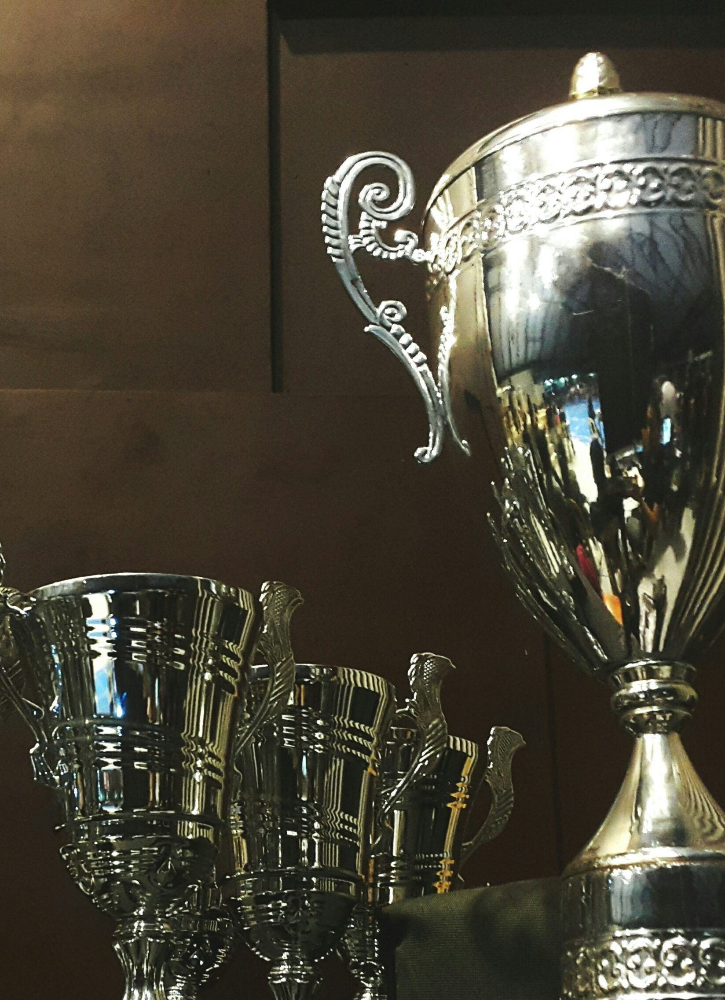
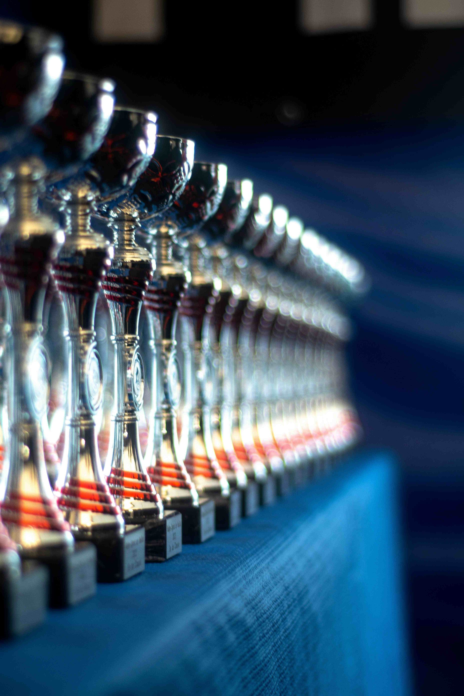
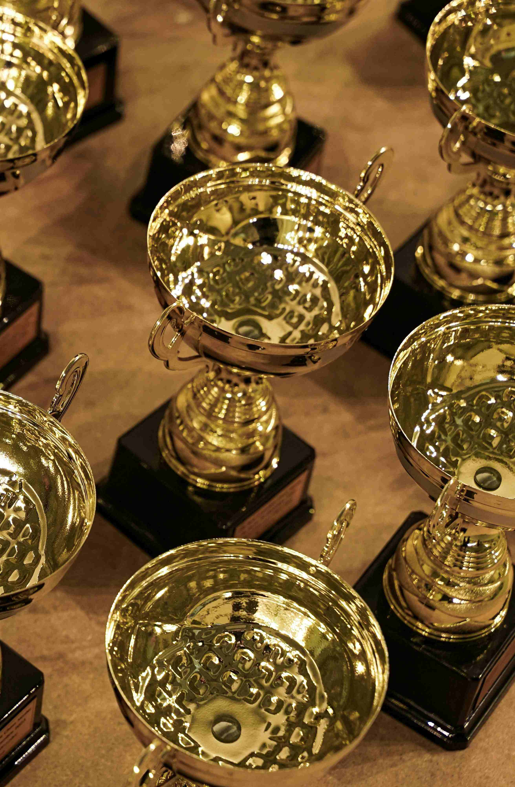
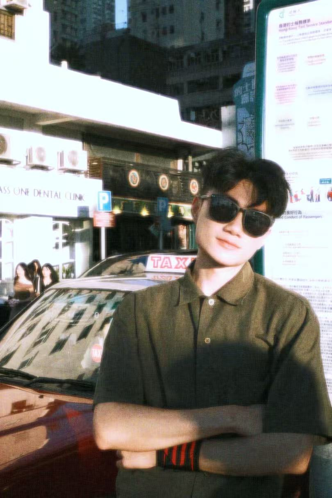
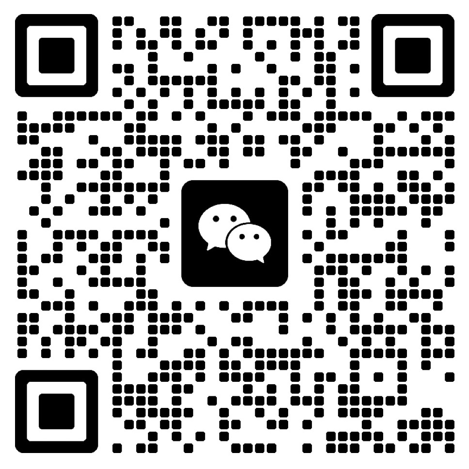

DESIGN MANAGEMENT & PRODUCT STRATEGY
National First Prize, NCDA
National Innovation Program

Internet+ Competition Gold

Challenge Cup Provincial Prize

Selected Chinese Universities Design Works
針對暈動症人群的非藥物干預穴位按摩方案
OWS耳機產品的PRD編寫與孵化
千年中軸·當代新生視覺表達
社區舊酒廠記憶延續空間
阿爾茲海默症關愛 Roguelike 遊戲

我兼具设计美学与商业管理思维。擅长通过数据调研挖掘用户痛点，并能产出PRD文档推动落地，心态开放，创新能力、执行能力与抗压能力强。
